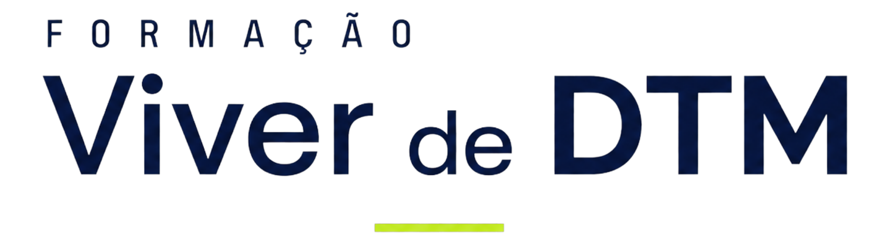
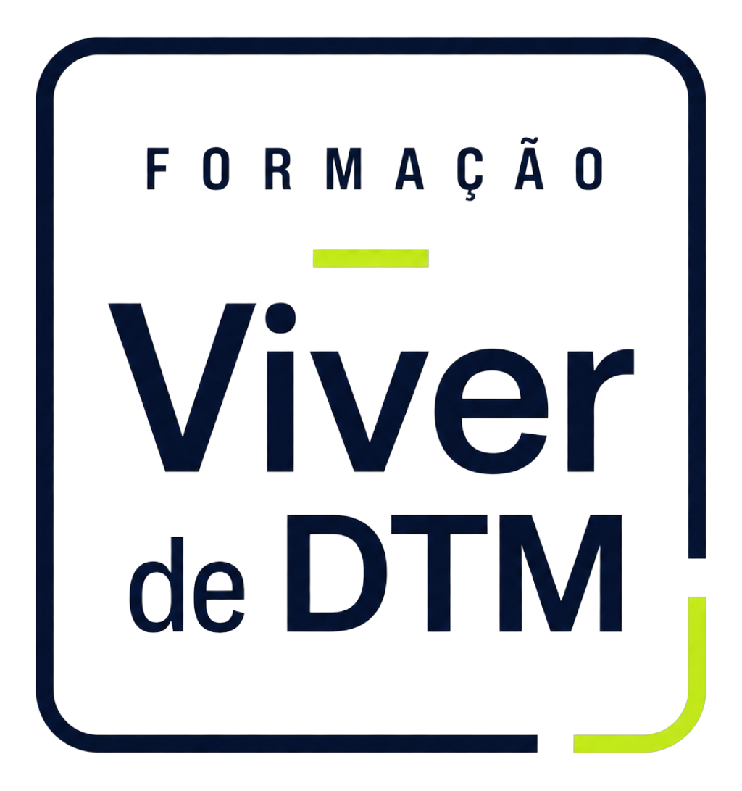

03 Logo & marca
logos finais · Formação Viver de DTM
Viver de DTM, com a assinatura que pulsa.
Wordmark grotesco de peso alto, com o descritor FORMAÇÃO em caixa-alta espaçada e o traço fluor-lime como assinatura — o pulso de energia que corta a seriedade do navy. Dois formatos: o lockup horizontal para assinaturas largas e o selo emoldurado para avatar, carimbo e espaços quadrados.

Horizontal · positivo (fundo claro)

Horizontal · negativo (fundo escuro)

Selo · positivo (fundo claro)

Selo · negativo (fundo escuro)
O selo como redutor
Quando o lockup horizontal não cabe — avatar de Instagram, favicon, carimbo de certificado, marca d'água — o selo emoldurado assume: o nome empilhado dentro da moldura navy de cantos arredondados, com o traço fluor como acento e o respiro fluor no canto inferior. Legível a 24px e imponente ampliado.